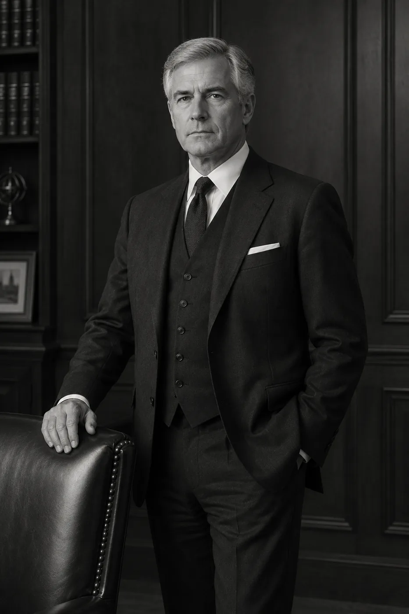

The Firm
Three partners lead the firm. Each sat for the portrait below under mild protest, which the firm considers a professional credential in itself.
Senior Partner · Weddings & Destination Events
Margaret co-founded the firm in 1998 after successfully declining her own retirement party at a previous employer. She pioneered the double-booked dental appointment, now taught as standard doctrine, and personally supervises every destination matter involving a boat. She has attended four weddings in twenty-seven years, all of them on purpose.
Founding Partner · Chair, Corroboration Committee · Reads every RSVP twice

Managing Partner · Workplace & Corporate
Edmund joined in 2003 from the hospitality sector, where he spent a decade telling guests that the kitchen was closed when it was not. He leads the corporate practice and answers the response desk himself on Thursdays. Colleagues describe his calendar as "a fortress" and his out-of-office reply as "the finest short fiction being written today."
Managing Partner · Keeper of the Hotline · Has never once replied-all
Partner · Last-Minute Extractions
Beatrice made partner in record time after conducting nine simultaneous extractions from a single New Year's Eve gathering, an operation still referred to internally as the Midnight Departure. She maintains the firm's protocol library and trains every corroborating witness personally. Under questioning she gives nothing away, including at dinner.
Partner · Director of Witness Preparation · Four-minute response, timed annually
“The firm also employs fourteen associates. For obvious professional reasons, they cannot be photographed, named, or described.”Firm policy, section 2
Initial consultations are held in person, on paper, or not at all, at the client's preference.
Request a Consultation